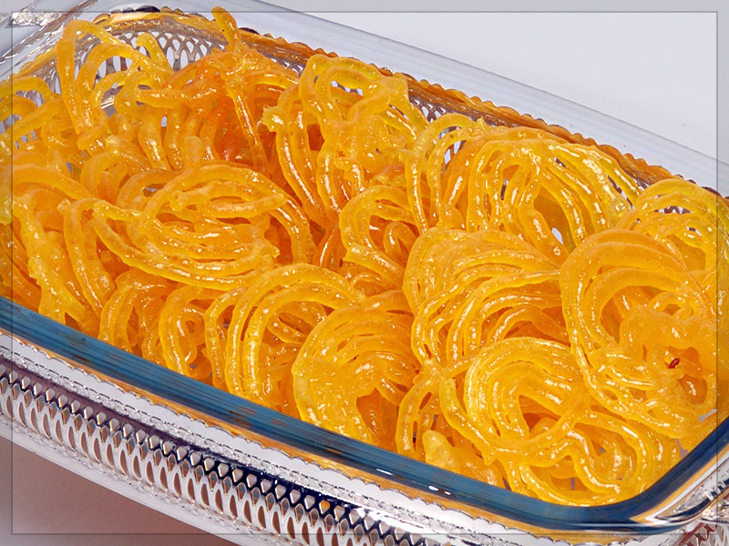

Genelde bol baharatlı yemekler yapılır. Et olarak yalnızca tavuk ve deniz ürünleri kullanılır, bakliyat, meyve ve baharat ağırlıklı bir mutfaktır. Tatlıdan tavuğa kadar bütün yemekler baharatlıdır. Tatlılar tarçın ağırlıklı, tuzlular köri (zerdeçal) ağırlıklıdır ancak bunların yanı sıra Hint mutfağında yüzlerce çeşit baharat vardır. Hinduizm inancı nedeniyle inek eti asla kullanılmaz. Dindarlık seviyelerine göre bazı Hindular her türlü hayvansal gıdadan uzak durur. Özellikle güneyde hindistan cevizi ve muz ile bunlardan üretilen ürünler yaygın kullanılır. Mercimek ve pirinç de tüm ülkede çok yaygın kullanılır. Tavuk kullanımı kuzeyde daha çoktur. Ülkede uluslararası fast food zincirleri dahi vejetaryen/vegan menüler sunmaktadır.

Jalebi Tatlısı
Son günlerde Hint tatlıları ve yemeklerine büyük bir ilgi bulunmakta. Jalebi de bu tatlardan biridir. Bizim lokmamıza yada tulumba tatlımıza benzerlik göstermektedir. Un, şeker, zerdeçal ve kakule koyularak yapılmaktadır. Yağda kızarır ve bal gibi şerbetin içerisine atılır. Sarmal yani yuvarlak simit şeklinde ve çıtır çıtır olur. Şerbetinin bir diğer özelliği ise içerisinde gül suyununda olmasıdır. Jalebi tatlısı, sıcak olarak servis edilir. Ülkemizde dahi meşhur olan
Besan ladoo, Hindistan’da çok sevilen tatlılardan birisidir. Günümüzde de Hint tatlılarına ve yemeklerine karşı bir hayli ilgi duyulmaya başlandı. Özellikle tatlıların içerisinde ki baharatların farklı oluşuyla ve pratik yapımıyla hem göze hemde damak zevkimize hitap etmekte. Ladoo’nun yapılışı bizim un helvamıza benzese de farklı malzemelere sahiptir. Herhangi bir gün tüketilse de özelikle düğün ve bayramlar da Hintlilerin vazgeçilmez tatlılarındandır. Ladoo‘nun temel malzemesi nohut unudur. İçerisindeki diğer malzemeler bazı tariflerde farklılık göstermektedir. İstediğiniz gibi damak zevkinize göre farklı tatlar ekleyebilirsiniz. Besan Ladoo'nun malzemeleri?